个人声明
我是蜡烛，是一名游戏创作者，也是“回游工作室”的实质拥有者和运营者。
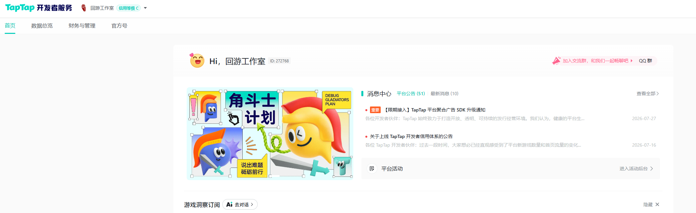
本人在此郑重声明，我本人以及回游工作室并没有报名参加此前举办的金海豚游戏创作比赛，也无意对比赛的公平公正性造成任何影响。我尊重所有创作者在所有比赛中的努力，也尊重所有作品的原创性。
《小鸥快骰》为2025年10月期间，我与程序Z、程序chenkui、TA霞以及其他队友们共同完成的作品。该作品主要用于参加taptap举办的聚光灯游戏创作比赛，该作品的所有权为所有参与该游戏创作的人共同所有。因taptap官方要求，《小鸥快骰》以“回游工作室”官方号身份进行上传。但“回游工作室”并无《小鸥快骰》的完全所有权，游戏的所有权为所有主创共同所有。
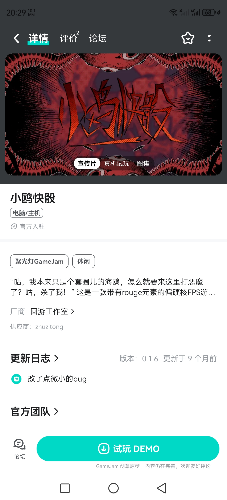
事情经过
2026年8月8日夜，经友人提醒，我得知《小鸥快骰》被用于投稿参加了金海豚游戏创作比赛，但本人并未参加该比赛，从未报名。
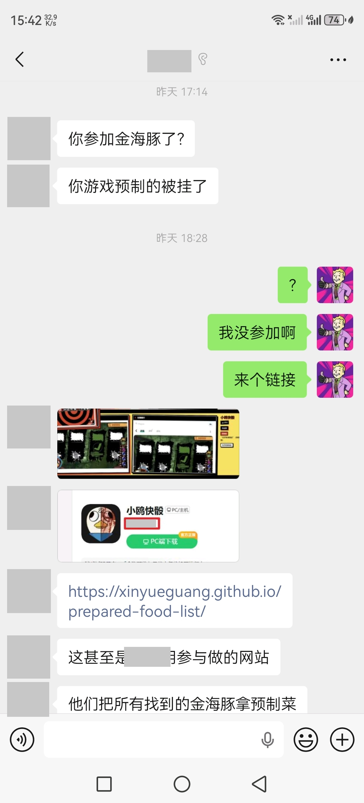
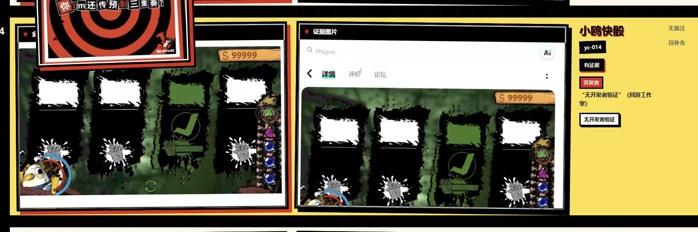
无开发者验证属实，因为我确实没有参与这次比赛，回游工作室同样没有参与比赛。但是后面括号中的内容存在误导，易造成“回游工作室参与了此次比赛”的错误解读，这是不合理的。
得知此消息后，我立即与两名拥有游戏源码的程序进行了沟通：
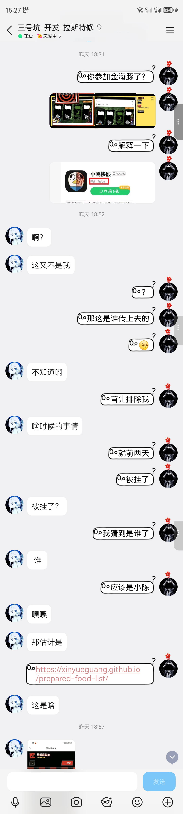
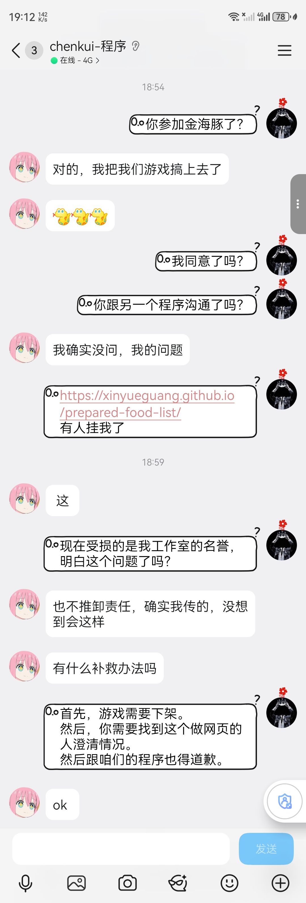
此时事态已经基本清晰，造成所谓“预制菜”情况的责任人已经找到，而且愿意下架违规的游戏，且愿意配合澄清、道歉。但是问题并没有完全解决。
于是我与创作该网站的负责人进行了沟通：
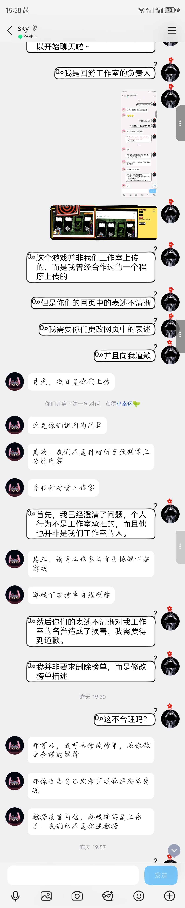
在沟通过程中，最初该网站的负责人表明了愿意进行澄清且愿意道歉的态度：
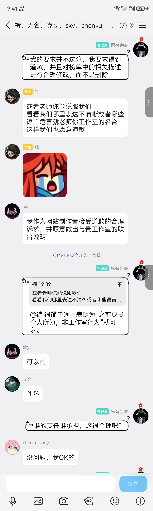
但是在后续的沟通过程中，该网站的负责人态度发生了反转，矢口否认此前愿意承担责任的态度，并且以“所有信息均为公开信息”、“没有直接说明两者之间的关系”、“主要责任在于上传者”等理由为借口，拒不道歉。
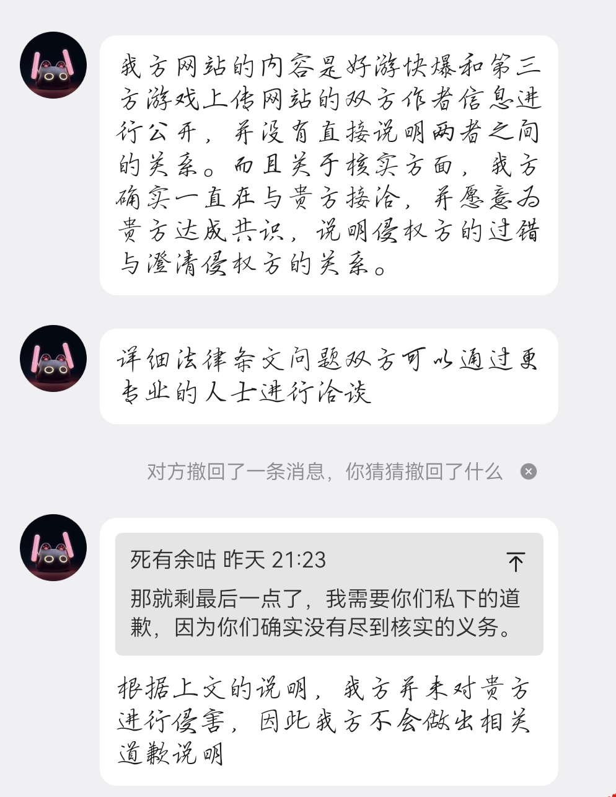
而且，关于此前网站方承诺的联合声明一事，网站负责人的态度也由愿意配合转变为了不接受，不配合，不负责。
在此基础上，我退让为可以双方各自进行声明，网站负责人的态度也同意了。
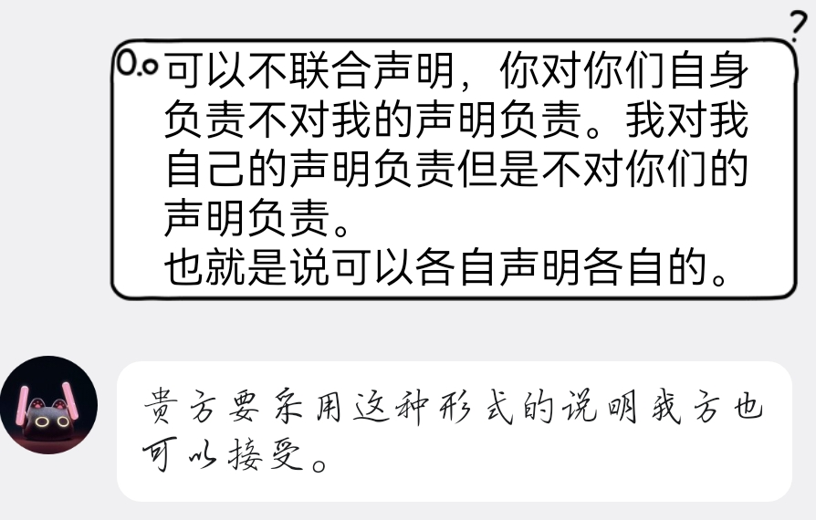
但是后续网站负责人再次反悔，拒不进行任何声明。
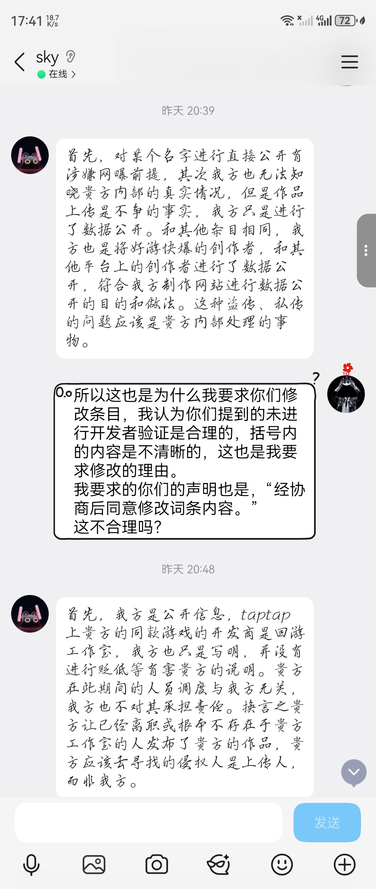
需要强调的一点是，我一直在强调的是网站方所做的信息公开和引导的方式对我的声誉造成了损害，这和私自上传该游戏的人的侵权问题是相互独立的。但是网站负责人一直在以此为借口拒不承担任何责任，这是严重不合理的。
在此基础上，我对于道歉的要求也从公开道歉转为了私人道歉：
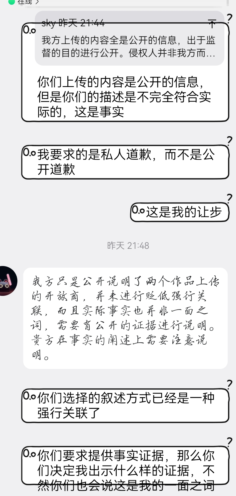
但是对方仍然拒不接受。
总结
在本次事件中，我本人以及回游工作室的声誉受到了极大的影响，一方面来自于私自挪用共有作品的侵权，一方面来自于网站方的错误描述和引导。
作品被挪用造成的侵权问题非常清晰。而网站方的错误主要体现在：1.在发布信息的时候未能有效核实具体情况，既没有联系相关的涉事上传人，也没有联系我这个回游工作室的实际主体人。2.网站中对于该游戏的所有权描述是不清晰的，对我的工作室的声誉造成了极恶劣的影响。3.在我阐述了事情经过以及合理诉求之后，网站方先是同意然后拒不配合，是一种极其消极的态度。
我本人无意对比赛的公平造成任何的恶劣影响，也从同意过把之前的作品投放到其他比赛中的行为。对于已经对我造成的影响，我将坚持捍卫自己的清白和自身的合理合法权力。
对于网站方拒不负责的态度，我表示强烈的谴责。
我要求得到网站方的公开道歉，并且出具相关的声明。
我支持网站方对于比赛的公平公正性的诉求，但是我拒不接受对方对自己的行为不负责任的态度，也不接受对方出尔反尔的表现，更不接受对方对责任的混淆。
每一个人都应该对自己的言行负责，所谓的“信息来自于公开信息”并不是为自己行为开脱的借口。在为充分核实责任主体的情况下，对相关主体进行负面关联并进行传播，也是网站方的主动行为，这是不可辩驳的。由此造成的声誉影响以及可能存在的网络围攻行为，也是由网站方的主动行为导致的，这是不能完全免责的。